psychedelia, pushed through print
In 2015, I was commissioned to create an official screen-printed concert poster for Tame Impala’s Columbus, Ohio tour stop. What began as a dream assignment quickly became one of the most meaningful projects of my career. A decade later, it’s still one of the pieces people ask me about most.
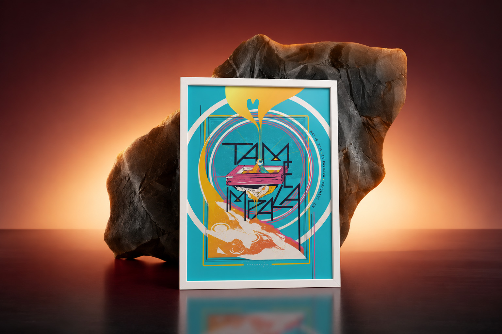
Tame Impala’s management company, Spinning Top Music in Australia, put out a call for artists to create official tour posters. Artists were selected based on their portfolios and assigned individual tour dates. Being a gigantic Tame Impala fan, I jumped at the opportunity.
At the time, Tame Impala was one of the most influential bands in my creative life. Their music had completely opened my eyes to different ways of thinking about sound, atmosphere, and creativity. Kevin Parker was a hero of mine for the way he did most of the recordings and writing by himself. To suddenly be contributing artwork to that world felt surreal.
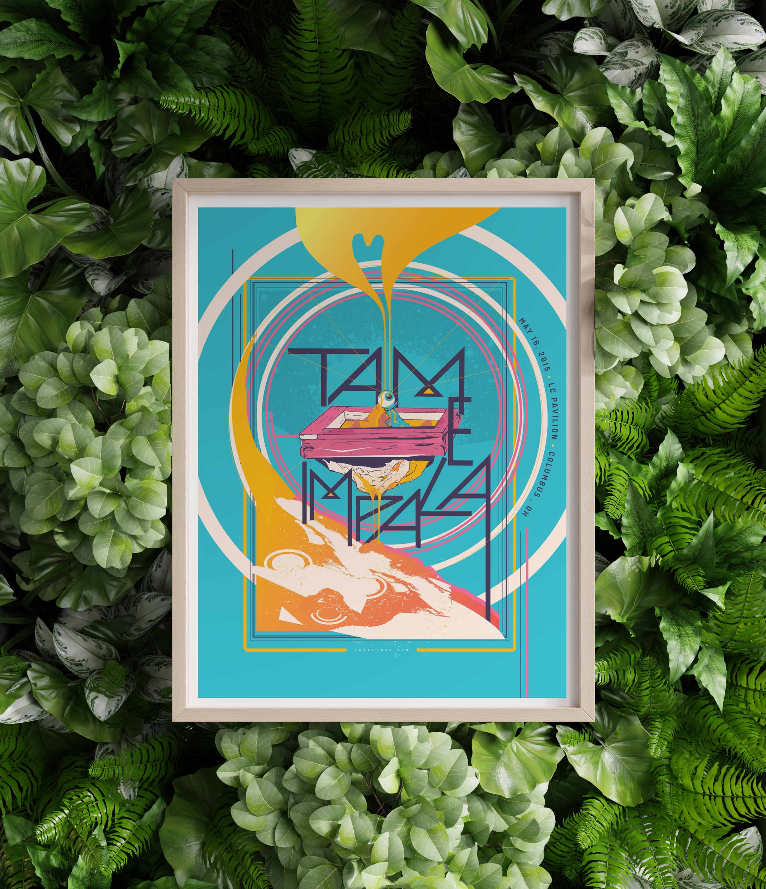
The pressure personally was pretty ginormous. The only creative direction we received was wonderfully simple: “No actual impalas.”
Beyond that, they wanted originality. I didn’t want to create a generic psychedelic poster where you could swap out the band’s name and use it for anyone else. I wanted it to feel specifically like Tame Impala, what they felt like to discover and the universe their music opens up for the listener.
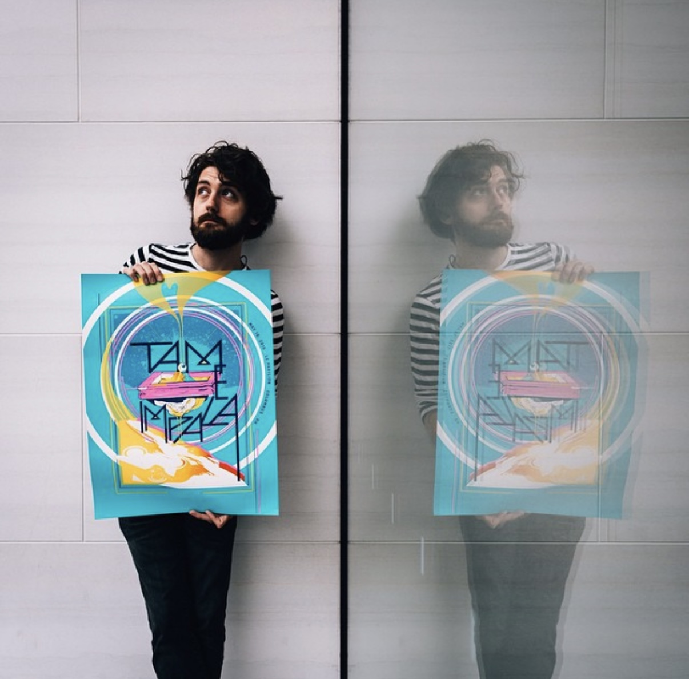
I started thinking less about concert posters and more about experiences. What does listening to Tame Impala actually feel like? Where does the music take me? Somewhere slightly impossible.
I began imagining this strange universe where the normal rules of reality didn’t quite apply. Things felt upside down, alive, and slightly mysterious. There was definitely a little M.C. Escher influence sneaking in there.
Instead of simply placing the words Tame Impala on top of the artwork, I used the letterforms as scaffolding for the world itself. Everything grew outward from there. The goal was simple: I wanted people to trip out even if they weren’t on any substances.
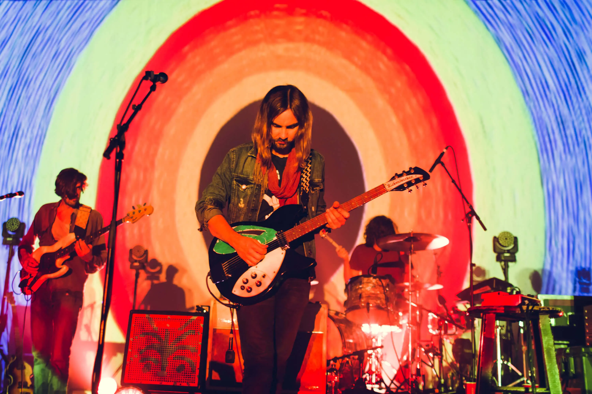
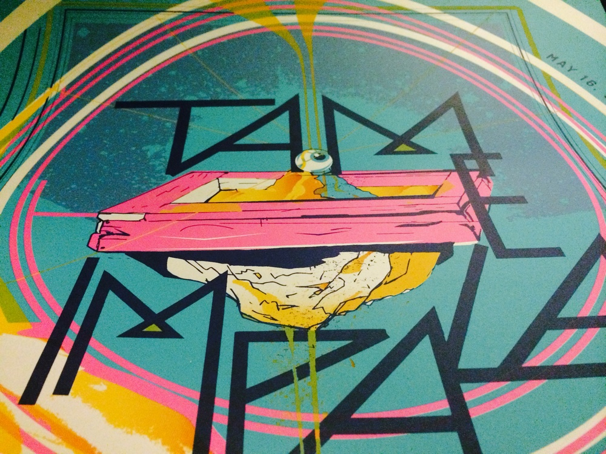
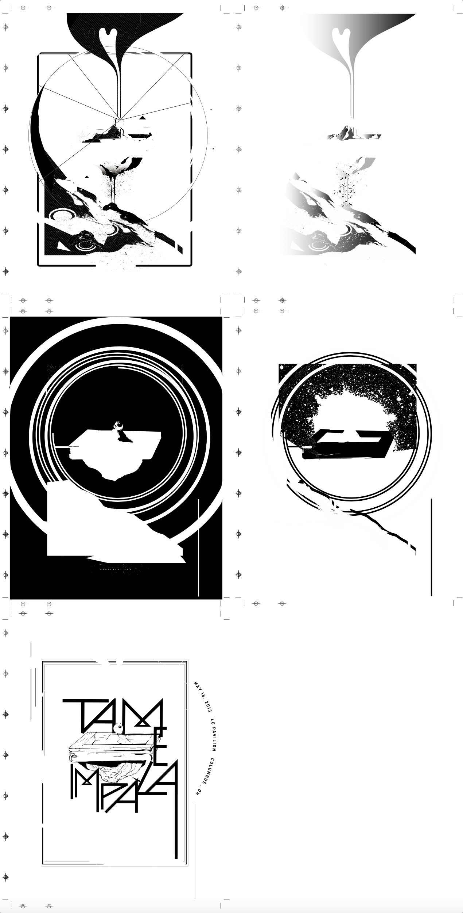
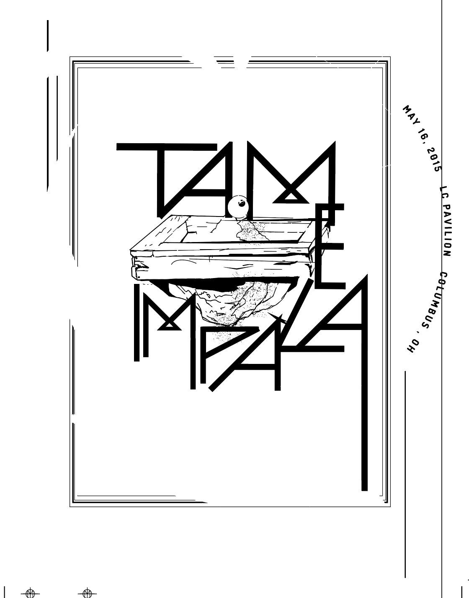
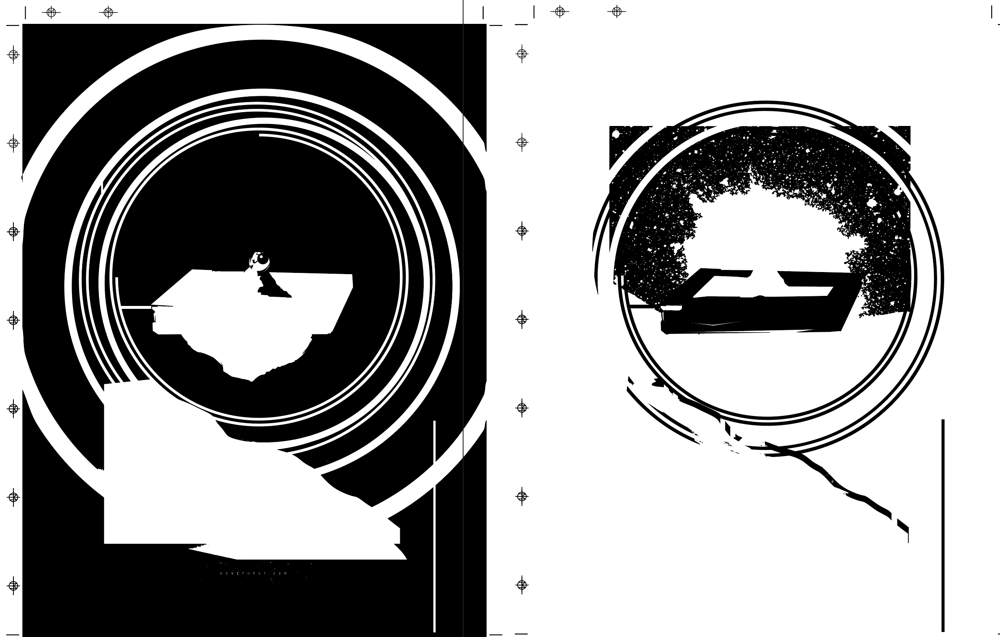
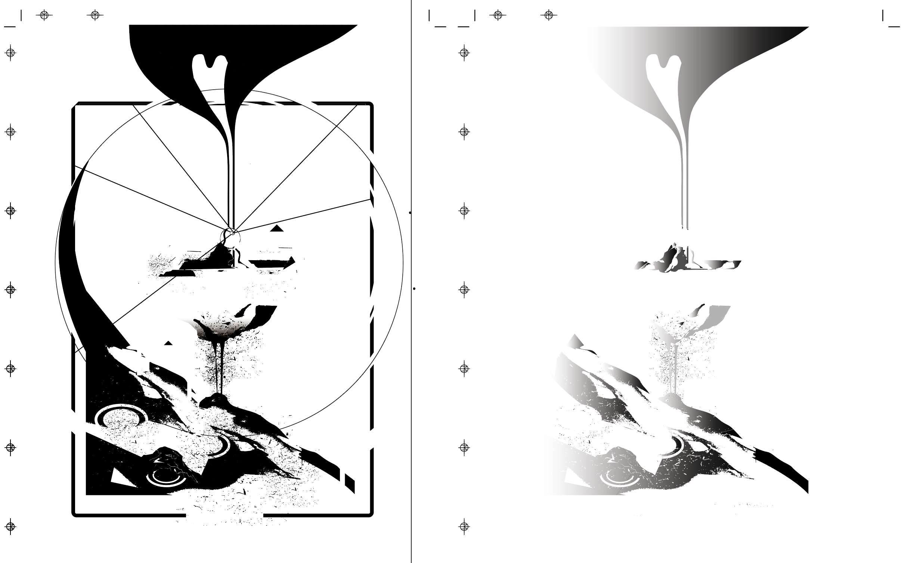
I created the entire poster illustration and composition from concept through final production. Unlike many poster projects where multiple concepts get presented, I felt strongly about the direction from the beginning and fully committed to the vision.
Once the design was approved, the focus shifted toward production and ensuring the final screen-printed version maintained all of the depth and detail that made the concept work. The final piece was produced as an official limited-edition screen print sold at the show.
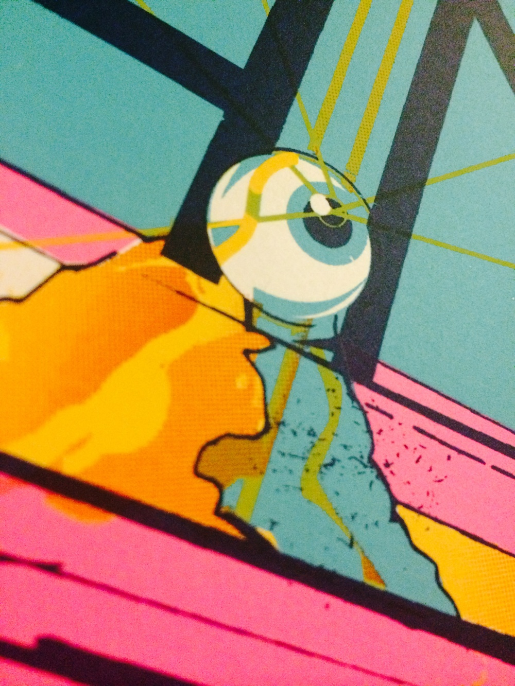
The best moment came when feedback arrived from Kevin Parker himself. The note was: “Make the name thicker, mate.” That was it. And he was totally right. I adjusted the typography, made the name more prominent, and the poster was approved. Tame Impala posted it on their social media and even tagged me.
The poster sold out at the show. And then something even stranger happened, people never stopped asking about it. More than ten years later, I still receive emails from fans who attended that show asking if I have any copies left. I’ve seen it hanging on friends’ walls. I’ve seen it resold online. I’ve even had to file takedown requests for unauthorized copies appearing on Etsy and Alibaba.
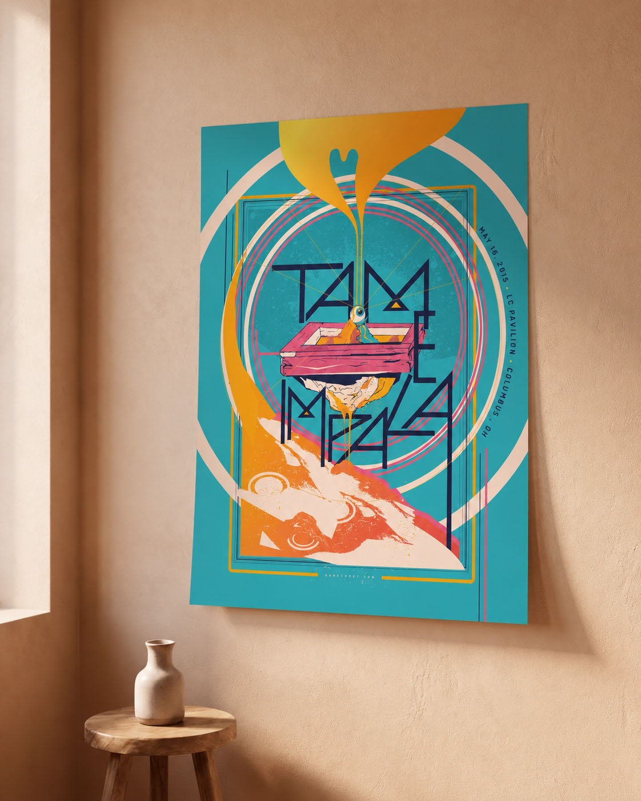
This is one of the few projects I’ll probably never remove from my portfolio.
The poster was originally created to advertise a single concert in Columbus, Ohio on a single night in 2015, and instead, it took on a life of its own. It became something people carried with them.
To me, that’s always the goal. Creating something that sticks. A decade later, people are still talking about this poster. That’s about as good an outcome as an artist could hope for.